Wuack wuack
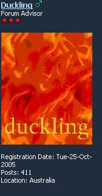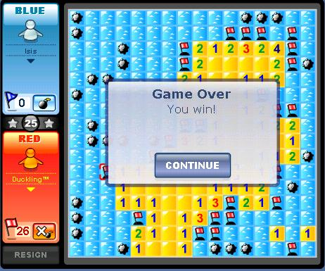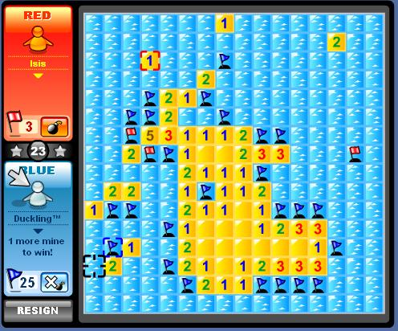 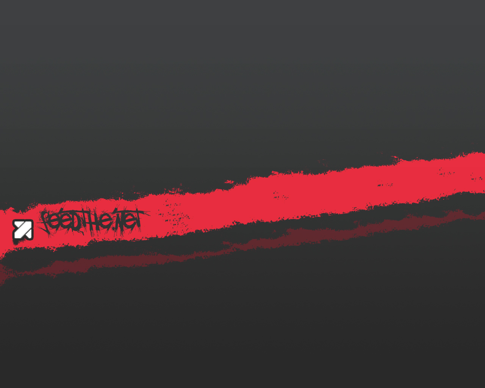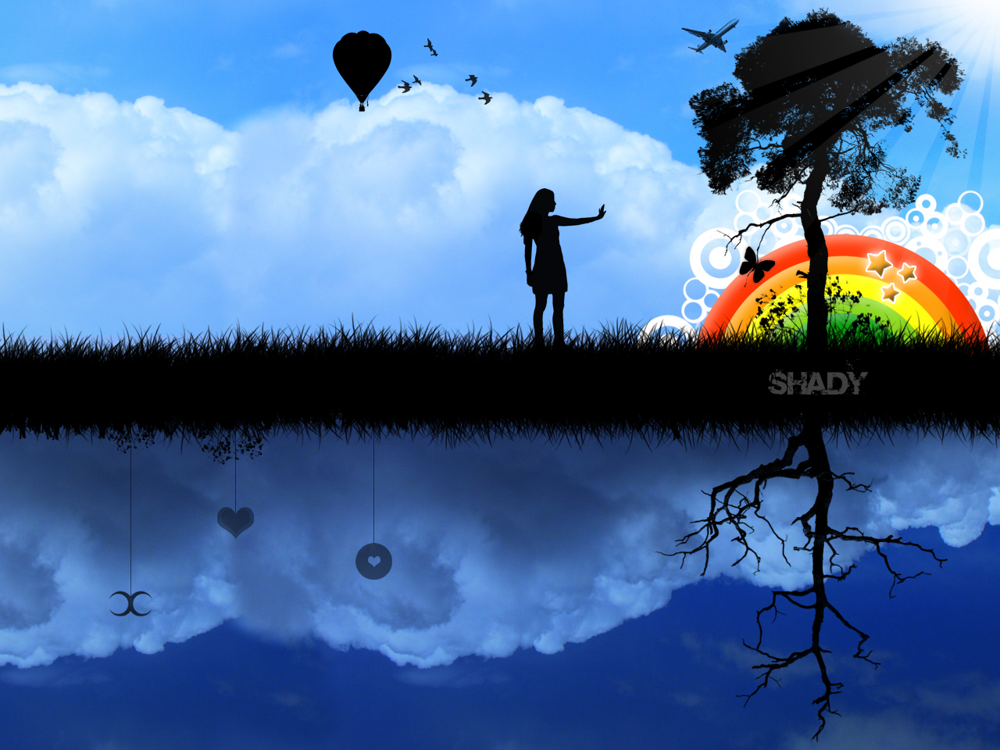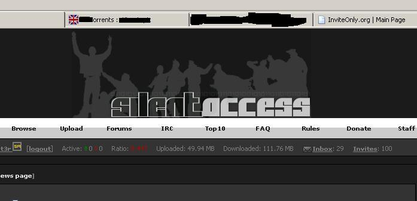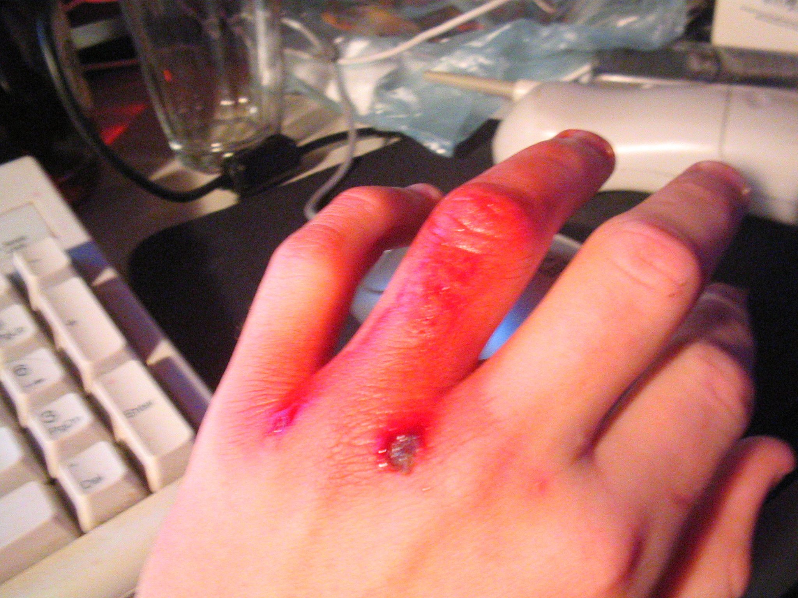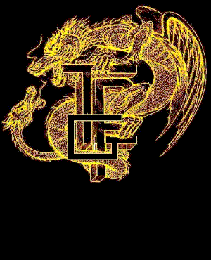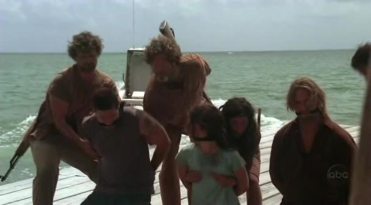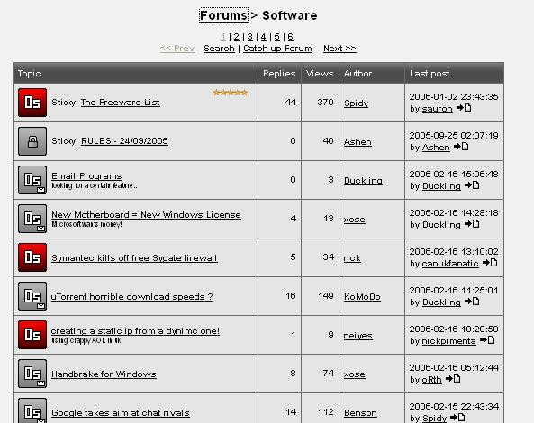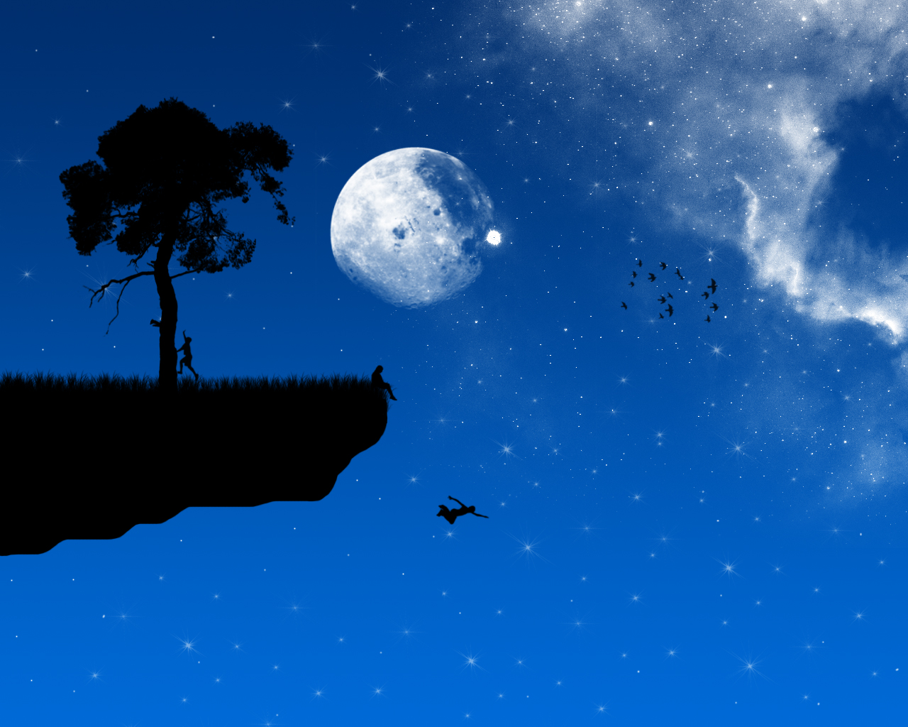
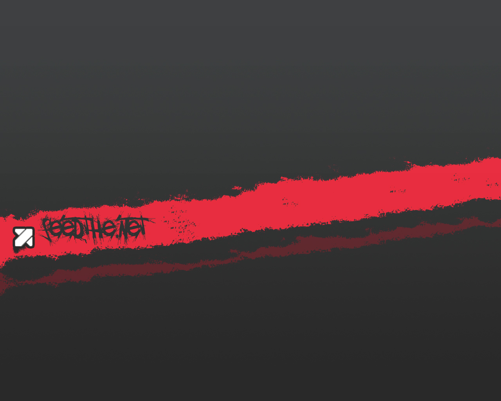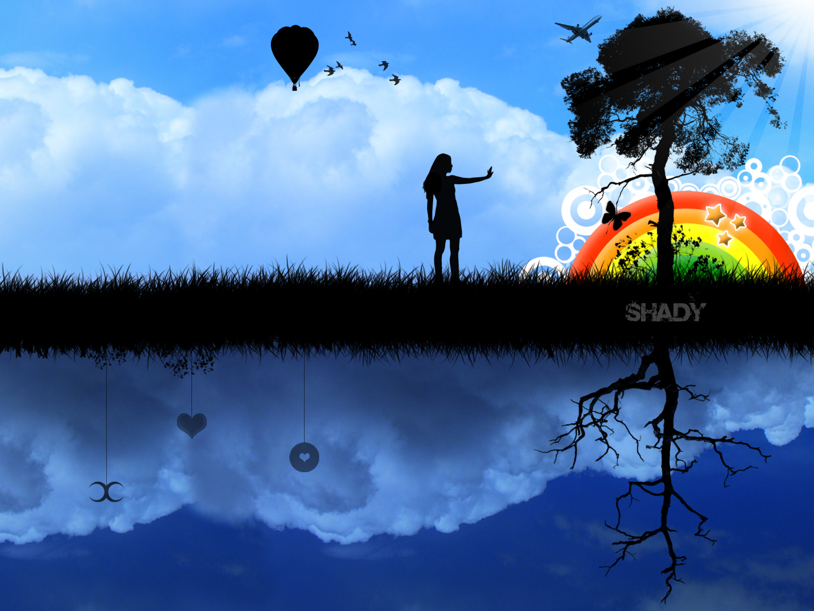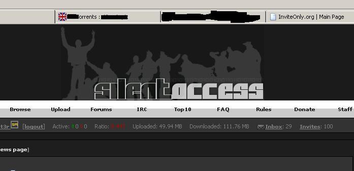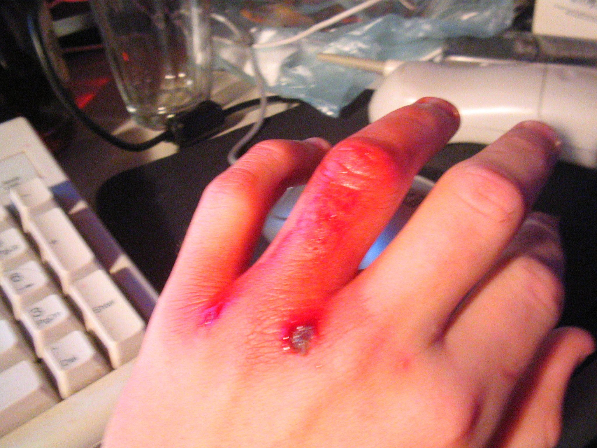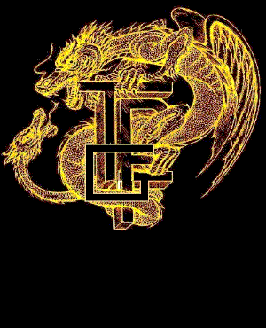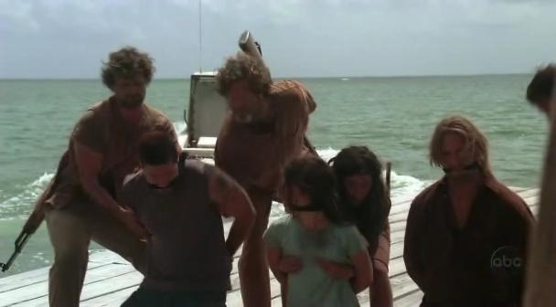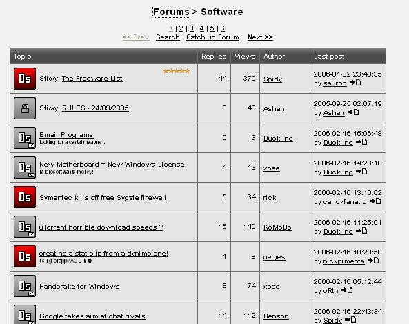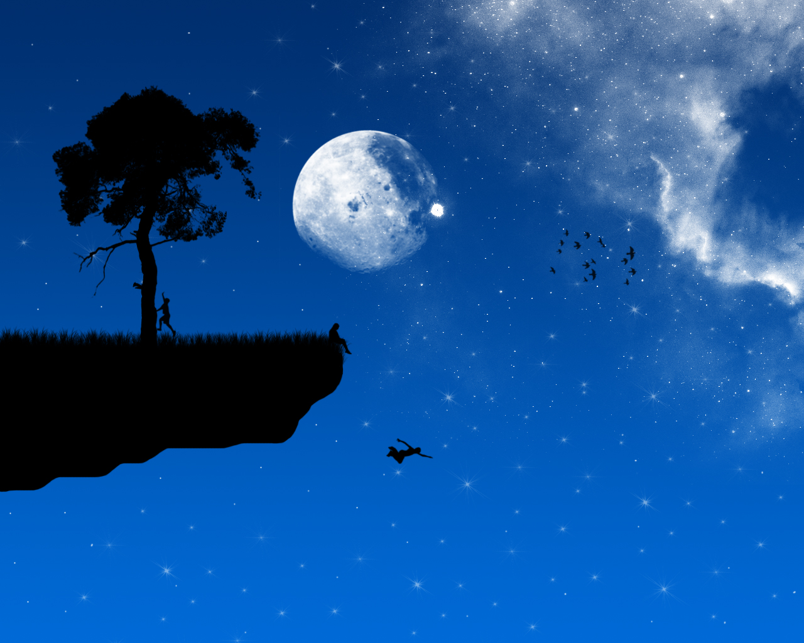 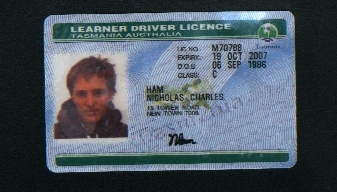
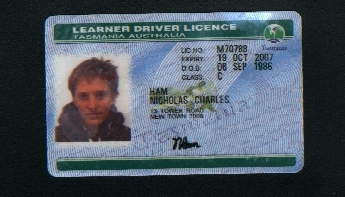
Piracy was a bit of a shitshow for a while (don't even get me started on the older p2p networks riddled with child porn and rape porn, many of us were told to put ourselves through other people's shoes to see what we could work out only for society to turn around and throw us under the bus while also contributing to and being complicit to a lot of rape and other forms of sexual abuse), especially with all the private trackers built on top of the Torrent Bits source code, along with forums dedicated to modifying the TBits source for setting up private trackers, way too dangerous with the kiddy fiddlers etc. on this planet! Was fun helping take down sites like 0sec (pretty sure ashan was the owner, I think it was jericho I was talking to when he wiped the servers) and TPG (wyldvixen or whatever was a cunt, should be able to pick her out in a line up if ever needed), along with getting an idea of how easily these private trackers were being set up with SilentAccess (also had uploaders with access to various top sites for different release groups etc., none of which were local).. When did ISIS start again (*cough* Cameron McRae)? Not sure if people ever got what they deserved for the groping in Lost? They started having to put the birth date on the back of licences as well..
Admittedly it's a little pathetic putting these up publicly, however this community has a horrible history of lying, using people's work to mislead/lie to people and even worse just telling people they have to pretend to play along, even going so far as to "give custody" of people to rapists who make them play along for them, lying to their friends and family about them having died in horrible ways and using that as an excuse to be unable to speak genuinely. Too many people claim they don't mind the rapists, including sleeping with them etc., but we wouldn't be able to flag them as rapists if they didn't make other people play along for them against their will. Then there's also the people in high level positions who do not have the competence for those positions, or are using those positions to make decisions on topics they don't have the required competence on to make such decisions, often helping ensure people have to keep playing along for rapists and covering up any mistakes, all of which cause widespread suffering throughout various communities. People should be able to genuinely say people are no longer alive, their suffering is over and they're not stuck playing along for rapists. People still haven't gotten what they deserve for that kind of behaviour over many periods of my life.. People refuse to speak up about what happened during these periods, along with people claiming they were antimatroid when that was me as well (including the Google sponsored ai comps, reddit [am qu83rt as well, and have used many other aliases] along with the live irc channel for the Chris Dorner saga). So many people have been forced to play along with rapist(s) and for the rest of society and too many people claim that's acceptable, even saying they're just going to join in with helping make sure people have to keep playing along for the rapists and the rest of society. If people aren't speaking genuinely and are causing these sorts of problems, figure out where any threats are coming from and who's on which side of the rapist vs. non-rapist war on this planet. We don't want rapists on this planet along with the vile scum who help them make people play along for them and the rest of society, slaughter them, that includes anyone who lies/misleads someone into playing along for them. Get into these communities and cause a ruckus! If it's a rapist society, be a danger to it. If people try to claim people have done too much for the rapist community, off the cunt. When I was younger the women claimed all these communities were run by rapists and to avoid them, these days people are claiming they prefer being raped and want to just leave things this way. I have zero interest in partaking in a rapist society, nor letting rapists keep making people play along for them. People need to wake the fuck up to the wars on this planet and start fighting for the right side. Apparently standing up against rape is a death sentence, but you can rape as many times as you like on this snuff torture rape planet.
Even as recently as a few years ago I was dragged off to the mental ward and they tried to make me delete my website along with all of my work, trying to cover up what the psychs and rapists do to people in this society. Held me down and injected me until I passed out, made me take drugs against my will which slowed my motor skills, reaction times, thinking abilities, any motivation, etc. etc. and as far as I can tell society sat back and watched while celebrating the rapists in this society. Rise up and take this society over from the people who think that's acceptable.
When are we going to give the woman and girls a go at being free from rapists and not having to see people who have made them play along for them in high positions throughout society continuing to do the same to other innocent people.
The goal on this planet is to wipe the planet of the rapists and prevent rape from ever happening again. Do not stop until it is achieved. Everything is a weapon, learn how to use it. Blow the world to smithereens smithereens smithereens, blow the world to smithereens la la la la, eh he he he he.